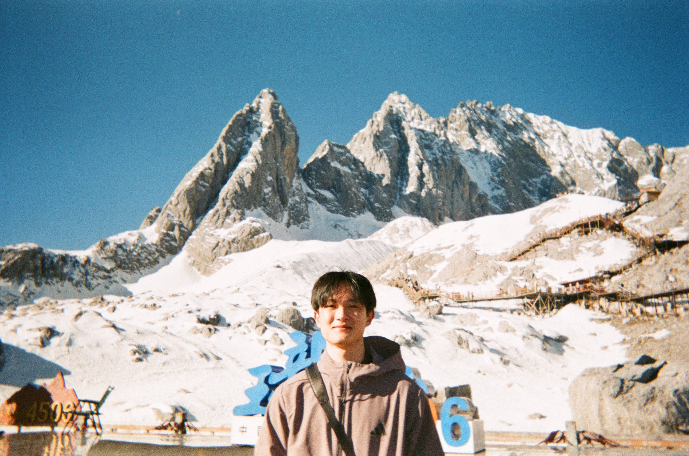

Open to internships · Singapore / Remote
Khoo Shi Xian
Computer Engineering @ NUS · Vision AI & ML
I build machines that can see — circuit-board inspection on NVIDIA Jetson, starfish detection with YOLO. Malaysian in Singapore. Basketball on weekends, ML papers on weeknights.

Save your photo aspfp.jpg
Work
One spotlight at a time.
Factory machine that inspects circuit boards by itself
Turned scattered lab demos into one machine: photographs each board, spots defects with no labelled defect data, moves its own camera stage (Jetson Orin).
- DINOv2 golden-reference comparison — zero-shot defect finding
- RapidOCR text read, alignment, auto-focus, SQLite logging
- Face recognition pipeline (SCRFD + ArcFace + FAISS) ~5.6 FPS @ 720p on NXP + Hailo-8
Real-life spell-casting — flick your wrist, cast a spell
4-player AR duelling game. I own the wearable sensors: ESP32 + IMU streams motion, gestures classified on Ultra96-V2 FPGA.
- FireBeetle ESP32 wearables, wireless, 4 simultaneous players
- FPGA fabric for low-latency gesture classification
Counting invasive starfish to save the reef
23,500 underwater frames. YOLOv5n vs YOLOv11n — image size mattered most (F2 0.058 → 0.321). Older model won at defaults.
- Rejected: Florence-2 auto-labelling, SAHI tiling, ByteTrack, augmentation sweeps
- Lesson: resolution > architecture tweaks for tiny objects
Discord for study groups
Real-time study rooms with Django + PostgreSQL + Channels over Redis. Apollo 11 (Advanced) — programme's 2nd-highest tier.
Also built: FPGA OLED mini-game (Verilog) · Java CLI chatbot — happy to talk about them, kept off this page to stay short.
Filter coffee
Brew log
Trading
Market hours.
Equities
Since Oct 2024
Deep dives and primers into AI bottleneck companies — irreplaceable positioning, strong balance sheets.
Crypto
Since Nov 2024
Mainly Bitcoin futures. Smaller size, strict risk limits.
Focus
Equity research, macro news, journaling every trade. Process over P&L — student account, learning first.
About
Quick snapshot
Background
Malaysia → Singapore. NUS Computer Engineering + Quant Finance minor. Tsinghua exchange (CS). Venture Corp Vision AI intern. Basketball, filter coffee, guitar, running.
Toolbox
Speaks English · Mandarin · Malay · Cantonese
Education
NUS 2023–2027 · B.Eng CE + QF minor
Tsinghua Sep 2025–Jan 2026 · Exchange
Contact
Let's build something
that sees.
+65 8885 3806 · Singapore · replies within a day